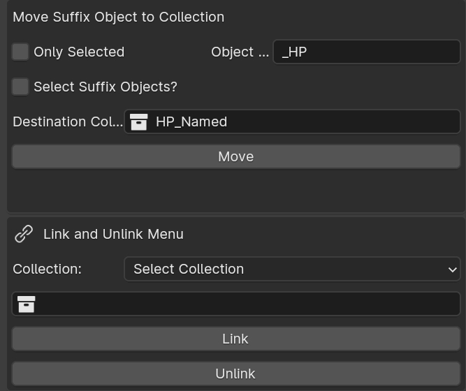

Object Renamer Tools

Move Suffix Object
- Move selected objects or scene objects with specific
suffixto target location. - Option to select the suffix object in scene.
Usage:
- Simply select the options you want, either
Only Selectedor not. This make sure only selected objects are checked for suffix and then those to move to the new collection.
Link and Unlink Menu
LinkerMenu helps object link to different collections instead of moving to another collection.Objectbecomes habitant of newcollectionalong with it'spreviousparentCollection.
Usage:
- Select the object/s to link/unlink to the collection.
- Press the Collection icon in Link menu to select the desired target collection.
- Press link/unlink to perform the operation.
Note
- If an object lives in only one collection. And if tried to perform an unlink from that collection, it won't work.
- If you need to perform this, simply delete the object.